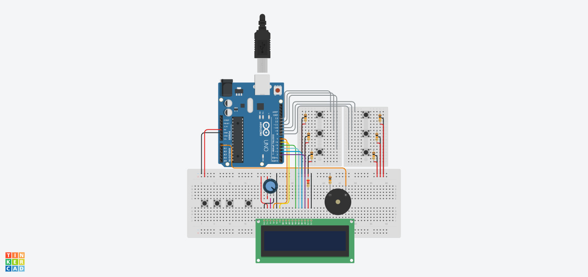
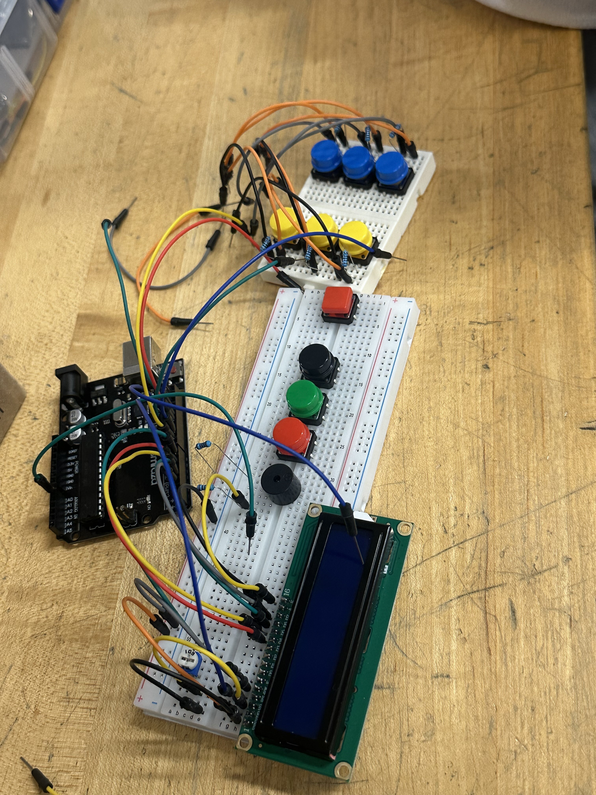

Course: TECH 117 (Computer Engineering Technology, Fall 2025)
Instructor: Ph.D. Ana Rodrigues
Group 4 - Team Members:
People with visual impairments often face significant challenges in communication. To interact with others, they rely on a tactile reading and writing system called Braille to spell out words. However, not everyone is able to read Braille. This creates a barrier between individuals with disabilities and the general population.
The proposed solution is a button-based input device connected to a display, which shows each letter as it is entered through the buttons, forming words. The prototype is build using an Arduino Uno, black/blue/green/red/yellow pushbuttons, an LCD display screen, and a passive buzzer.
The ultrasonic sensor measures distance; the Arduino activates LEDs and the buzzer according to distance thresholds.
The price may vary due to sales or promotions.
| Item | Qty | Unit Price (CAD) | Subtotal (CAD) | Source |
|---|---|---|---|---|
| Arduino Uno Rev3 | 1 | $5.03 | $5.03 | AliExpress |
| Pushbuttons | 10 | $0.33 | $3.27 | AliExpress |
| Passive Buzzer | 1 | $0.16 | $0.16 | AliExpress |
| LCD 16x2 | 1 | $5.24 | $5.24 | AliExpress |
| 10 kΩ Resistors | 1 | $0.04 | $0.40 | AliExpress |
| 220 Ω Resistors | 1 | $0.03 | $0.03 | AliExpress |
| 100 Ω Resistors | 1 | $0.03 | $0.03 | AliExpress |
| 10 kΩ Potentiometer | 1 | $0.40 | $0.40 | AliExpress |
| 830 pins Breadboard | 1 | $4.95 | $4.95 | AliExpress |
| 170 pins Breadboard | 2 | $1.41 | $2.82 | AliExpress |
| Jumper Wires | 1 set of 40 | $2.99 | $2.99 | AliExpress |
| Estimated Total | $25.32 | — | ||
The following image shows the assembled prototype on a breadboard.
The following Arduino code controls the system, lighting LEDs and activating the buzzer based on distance readings from the HC-SR04 sensor.
// Collision Warning System with Distance Sensor (HC-SR04)
// Author: Ana Rodrigues
// Oct 2, 2025
// Object is farther than 50cm: Green LED lights up
// Object is closer than 50 cm, but more than 10cm away: Yellow LED lights, buzzer plays 300Hz tone
// Object is closer than 10cm: Red LED lights up, buzzer plays 500Hz tone
//LED pins
const int greenLED = 2;
const int yellowLED = 3;
const int redLED = 4;
// Ultrasonic sensor pins
const int trigPin = 9;
const int echoPin = 10;
// Passive buzzer pin
const int buzzer = 11;
void setup() {
pinMode(greenLED, OUTPUT);
pinMode(yellowLED, OUTPUT);
pinMode(redLED, OUTPUT);
pinMode(trigPin, OUTPUT);
pinMode(echoPin, INPUT);
Serial.begin(9600);
}
void loop() {
// Measure distance
digitalWrite(trigPin, LOW);
delayMicroseconds(2);
digitalWrite(trigPin, HIGH);
delayMicroseconds(10);
digitalWrite(trigPin, LOW);
long duration = pulseIn(echoPin, HIGH);
long distance = duration * 0.034 / 2;
Serial.print("Distance: ");
Serial.print(distance);
Serial.println(" cm");
//Error in measurement:
if (distance <= 0)
return;
//Too close:
if (distance <= 10) {
digitalWrite(greenLED, LOW);
digitalWrite(yellowLED, LOW);
digitalWrite(redLED, HIGH);
tone(buzzer, 500); // Play 500Hz tone
return;
}
//Midrange:
if (distance <= 30) {
digitalWrite(greenLED, LOW);
digitalWrite(yellowLED, HIGH);
digitalWrite(redLED, LOW);
tone(buzzer, 300); // Play 300Hz tone
return;
}
//Normal status:
digitalWrite(greenLED, HIGH);
digitalWrite(yellowLED, LOW);
digitalWrite(redLED, LOW);
noTone(buzzer); // stop buzzer
delay(100);
}
The system effectively demonstrates distance-based alerting using Arduino. It’s affordable, educational, and sustainable through reusable components.
The following external resources and example projects demonstrate related Arduino applications featuring tactile input buttons, buzzer, and LCD display: